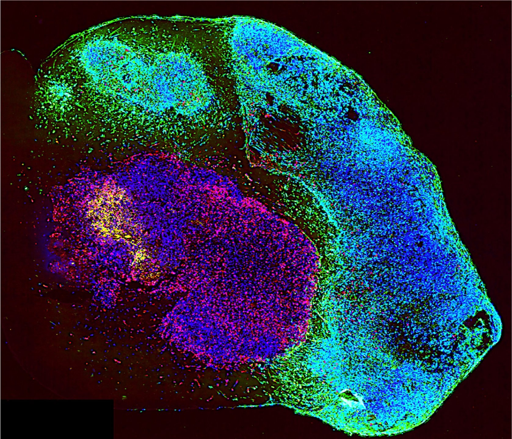

Merging AI and biology to create personalized avatars and next-gen therapeutic predictions.
aiPTO Solutions harnesses cutting-edge artificial intelligence and biomimetic modeling to replicate tumor microenvironments at a molecular level. These digital twins enable rapid prediction of patient-specific treatment responses, unlocking personalized therapeutic design and real-time drug resistance solutions.
Visualized immune-tumor interactions from patient-derived models.
February 2025 - DKFZ highlights a major breakthrough in brain tumor therapy through the publication of an individualized patient-derived brain organoid model. This innovation paves the way for personalized treatment of aggressive brain tumors such as glioblastoma. Read more on DKFZ
February 2025 - aiPTO celebrates the publication of pioneering research by scientific co-founder Prof. Haikun Liu, presenting the first brain cancer avatar model capable of predicting patient responses. This patient-derived organoid platform, integrated with aiPTO's generative AI, is transforming brain cancer precision medicine and drug development. View LinkedIn post | Read perspectives on DKFZ
December 2024 - DKFZ officially announces the spin-off of aiPTO, a next-generation techbio startup leveraging AI and organoid technology to revolutionize brain cancer therapy. View LinkedIn post
Send us an email at contact@aiptobio.com